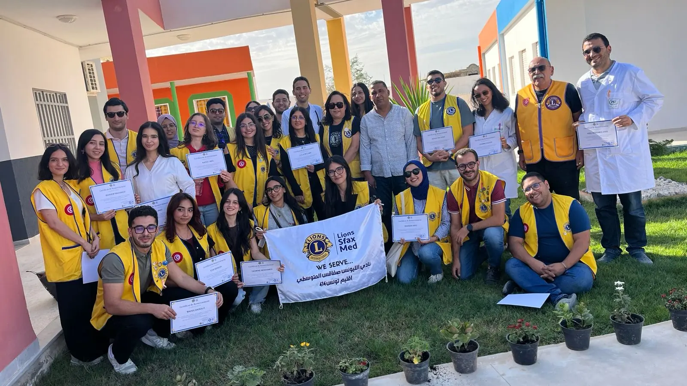
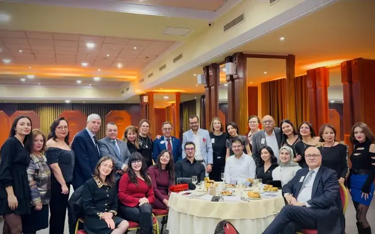
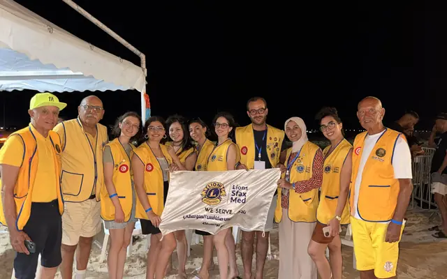
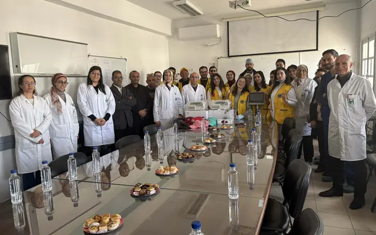
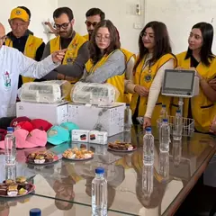
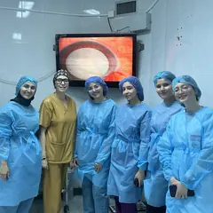
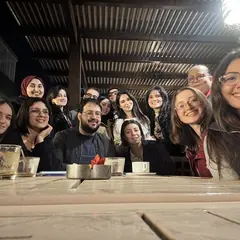
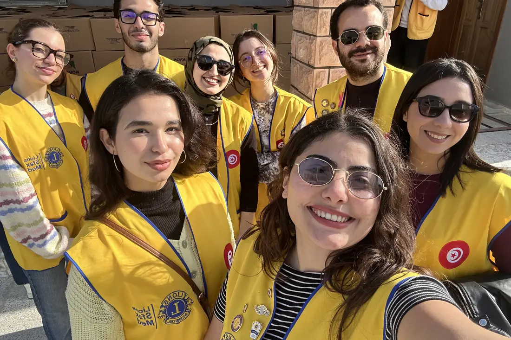

Diabète
Nous dépistons, nous sensibilisons, et nous orientons vers les professionnels de santé partenaires à Sfax.
En savoir plus
Une communauté de femmes et d'hommes engagés dans des actions concrètes pour la santé, l'environnement, l'humanitaire et la jeunesse.
Sfax, Tunisie au cœur de notre communauté
Nous réunissons des femmes et des hommes d'action pour identifier les besoins de nos communautés et y répondre concrètement — qu'il s'agisse de santé, d'alimentation, d'éducation, d'environnement ou d'aide d'urgence.
Fondé en 2025, notre club rassemble des membres animés par une même volonté : servir utilement la ville, ses quartiers et ses initiatives citoyennes.
Des actions concrètes pour un impact durable.
Nous dépistons, nous sensibilisons, et nous orientons vers les professionnels de santé partenaires à Sfax.
En savoir plus
Nous nettoyons, nous plantons, et nous sensibilisons aux gestes qui préservent le littoral méditerranéen.
En savoir plus
Nous soutenons les familles vulnérables et nous nous mobilisons vite lorsque l'urgence l'exige.
En savoir plus
Nous accompagnons les élèves, nous soutenons leur scolarité et nous construisons avec les acteurs éducatifs.
En savoir plusWE SERVE
Chiffres à confirmer par le bureau avant mise en ligne.
12Juin

14Juin

19Juin





Ensemble, nous pouvons avoir un impact réel sur notre communauté.
Nous rejoindre